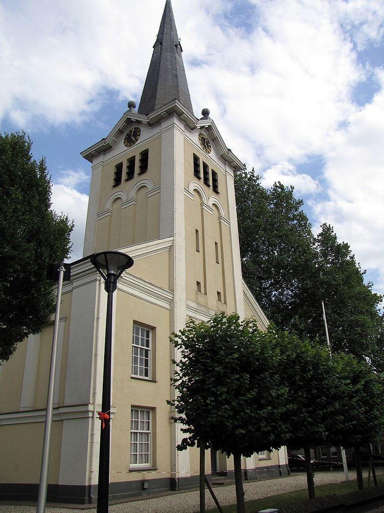

Feitjes over Gendringen
- Gendringen heeft een rijke geschiedenis die teruggaat tot de middeleeuwen. De naam wordt voor het eerst genoemd in documenten uit de 13e eeuw.
- De Sint-Vituskerk, gebouwd in de 12e eeuw, is een belangrijk cultureel en religieus centrum in Gendringen.
- Gendringen ligt in een landelijke omgeving met prachtige natuur, ideaal voor wandel- en fietstochten.
- Jaarlijks organiseert Gendringen verschillende evenementen, waaronder het Gendringense Dorpsfeest, dat lokale cultuur viert.
- De omgeving biedt recreatieve voorzieningen en schilderachtige natuur, met nabijgelegen Saksische boerderijen.
Sint-Maartenkerk
De Sint-Maartenkerk, ook wel de Hervormde kerk, is een protestantse kerk in de Nederlandse plaats Gendringen. De oorspronkelijke kerk is in de 15e eeuw gebouwd en ging tijdens de reformatie over van de katholieken naar de protestanten. Deze kerk brandde in 1830 grotendeels af, op delen van de toren na. In 1835 werd de heropgebouwde kerk geopend. De onbekend architect heeft zich, gezien de merkwaardige pilasters die de rechthoekige vensters flankeren, duidelijk laten inspireren door contemporaine kerkgebouwen uit de school van Karl Friedrich Schinkel in het Duitse Rijnland, zoals de St.Mariä Himmelfahrt in Rees (1820-1828). Sterk verwant is ook de Evangelische Kirche in het direct over de grens gelegen stadje Isselburg (1830-32). De lichtgekleurde zaalkerk heeft een vierkante toren die in de voorgevel is verwerkt. Deze toren is in 1879 uitgebreid en wordt bekroond met een relatief hoge achtkantige naaldspits. In de kerk is een klaviersorgel uit 1841 aanwezig van de firma Nolting. Dit orgel is in 1965 en in 2014 gerestaureerd.[
Engbergen
Engbergen is een recreatiegebied op de grens van de Gelderse streken de Achterhoek en de Liemers in de gemeente Oude IJsselstreek. Engbergen ligt in de gelijknamige buurtschap op ongeveer één kilometer ten oosten van Gendringen. In het recreatiegebied bevinden zich onder andere een rivierduin[1] met bos, een natuur- en wandelgebied met zogeheten 'blotevoetenpad', paardensportcentrum Diekshuus, een bijenstal, een openluchttheater, twee restaurants waarvan één met grote speeltuin, een uitkijktoren, een kinderboerderij, een klein vliegveldje voor ultralight vliegtuigen, korenmolen Molen Van Hal en golfbaan 't Lohr.
.JPG)